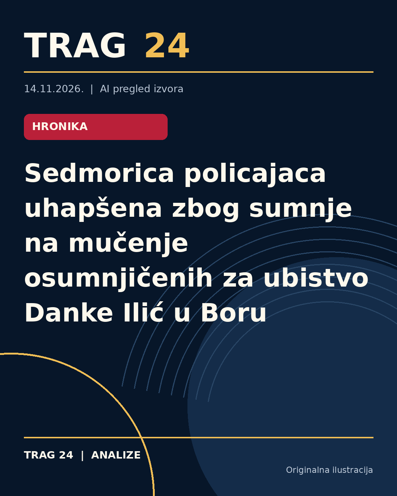

Sedmorica policajaca uhapšena zbog sumnje na mučenje osumnjičenih za ubistvo Danke Ilić u Boru

ŠTA SE DOGODILO
Sedmorica policajaca iz Policijske uprave u Boru uhapšena su zbog sumnje da su tokom pritvora zlostavljali i mučili Srđana Jankovića i Dejana Dragijevića, osumnjičene za teško ubistvo dvogodišnje Danke Ilić. Hapšenja su izvršena po nalogu Višeg javnog tužilaštva u Nišu. Takođe, osam policajaca iz UKP-a, uključujući starađađu, lišeno je slobode zbog sumnje da su u službenim prostorijama Policijske uprave u Boru zlostavljali i pretukli Dalibora Dragijevića, koji je od posledica preminuo.
HRONOLOGIJA
Optuženi Srđan Janković i Dejan Dragijević terete se za teško ubistvo devojčice Danke Ilić koje se dogodilo 26. marta 2024. u okolini Bora. Njihovo suđenje počelo je u Višem sudu u Negotinu. Prema podacima tužilaštva, hapšenje policajaca usledilo je nakon prikupljenih dokaza u predistražnom postupku i naloga javnog tužioca izdatih prethodnog perioda, koje međutim, nisu bili odmah sprovedeni od strane Sektora unutrašnje kontrole MUP-a. Dalibor Dragijević, brat jednog od optuženih, preminuo je 7. aprila 2024. usled povreda zadobijenih u pritvoru.
ŠTA NAVODE IZVORI
Više javno tužilaštvo u Nišu potvrdilo je da je naložilo hapšenje zbog sumnje na teške povrede, zlostavljanje i mučenje osumnjičenih dok su bili u pritvoru. Iz Višeg javnog tužilaštva rečeno je da su naloge za hapšenje ranije izdali, ali da Sektor unutrašnje kontrole Ministarstva unutrašnjih poslova nije na vreme postupao. Izvor iz Informera navodi da je hapšenje obavljeno po nalogu javnog tužioca i da su policajci osumnjičeni za zlostavljanje i smrt Dalibora Dragijevića. Blic dodaje da su policajci zadržani do 48 sati pre saslušanja.
ŠTA JE POTVRĐENO
Potvrđeno je da je sedam policajaca iz Borha uhapšeno zbog sumnje da su zlostavljali i mučili Srđana Jankovića i Dejana Dragijevića tokom njihova pritvora. Takođe je potvrđeno da je Dalibor Dragijević preminuo usled teških povreda zadobijenih u prostorijama Policijske uprave u Boru, kao i da je za njegovo zlostavljanje uhapšeno osam osoba iz UKP-a. Suđenje za teško ubistvo Danke Ilić je u toku, a optuženi negiraju krivicu u sudnici.
ŠTA NIJE POTVRĐENO
Nije potvrđeno kakav je tačan stepen odgovornosti pojedinih policijskih službenika, kao ni detalji okolnosti koje su dovele do povreda Dalibora Dragijevića. Nema pouzdanih podataka o ishodu istrage koja bi definitivno utvrdila sve činjenice u vezi sa mučenjem i zlostavljanjem pritvorenih osumnjičenih. Takođe, tvrdnje o priznanju krivice unutar policijske stanice nisu detaljno potvrđene u zvaničnim izvorima.
ŠTA OSTАJE OTVORENO: Ostaće otvoren tok daljih istražnih i sudskih postupaka koji treba da razjasne okolnosti zlostavljanja u policijskim prostorijama i eventualnu odgovornost svih uključenih lica. Takođe ostaje nepoznato kako će se odvijati postupak protiv uhapšenih policajaca i da li će biti dodatnih hapšenja ili zadržavanja. Javnost čeka zvanična saopštenja Višeg javnog tužilaštva nakon saslušanja osumnjičenih.
Izvori
- https://informer.rs/hronika/vesti/1169851/hapsenje-policajci-zlostavljanje-bor
- https://www.danas.rs/vesti/drustvo/vjt-uhapseni-policajci-mucenje-osumnjiceni-danka-ilic-ubistvo/
- https://www.blic.rs/vesti/hronika/sedmorica-policajaca-osumnjicena-da-su-zlostavljali-optuzene-za-ubistvo-danke-ilic/1jhv3wj
Ova analiza je pripremljena uz pomoć veštačke inteligencije na osnovu javno dostupnih izvora. Navodi izvora nisu nužno nezavisno potvrđeni.